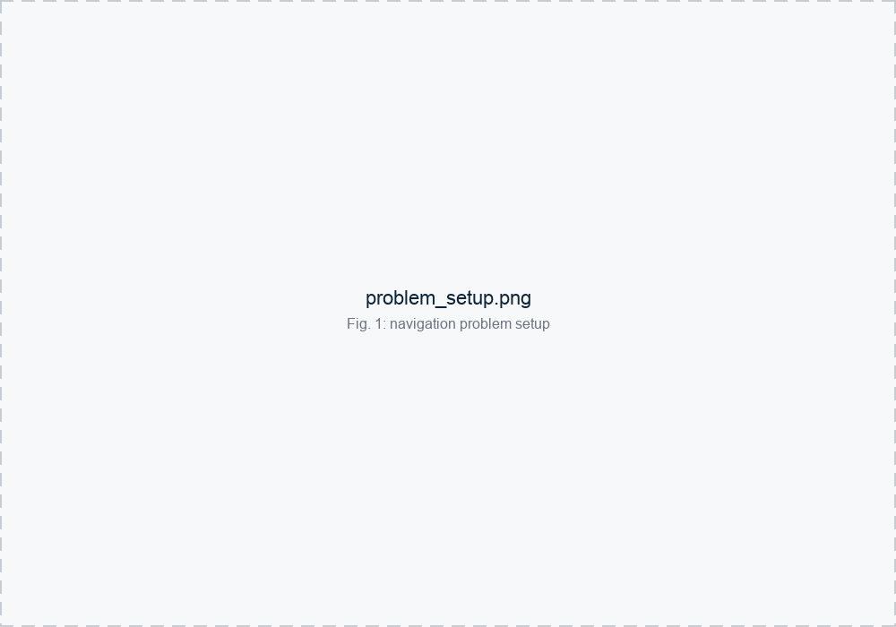
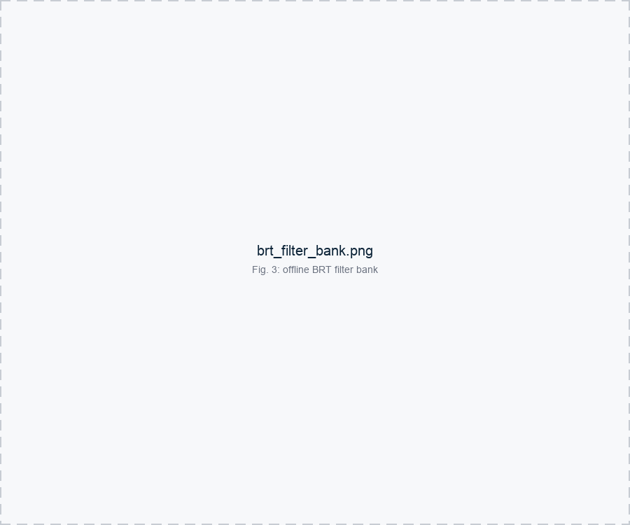
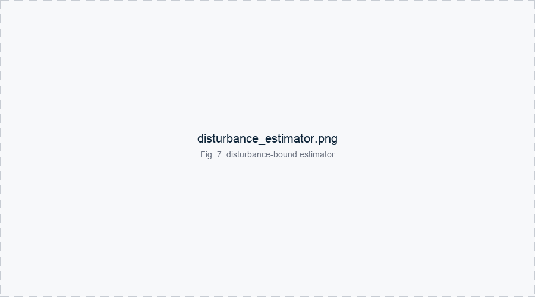

Adaptive Safety Shielding for Goal-Directed Navigation under Exogenous Disturbance
Debajyoti Chakrabarti, Shawn Yuxuan Dong
Overview
Learning-based navigation policies can be efficient in nominal conditions but may become unsafe when obstacles or disturbances differ from training. We combine a PPO navigation policy with an offline bank of Hamilton-Jacobi backward-reachable-tube (BRT) safety certificates. At runtime, a moving-window estimator tracks the active disturbance level, selects an appropriate certificate, and overrides the learned policy near the certified safety boundary.
The main question is whether safety certificates can be adapted online as disturbance conditions change without solving a new Hamilton-Jacobi PDE during deployment.

Adaptive Reachability-Based Shielding
Offline:
- Precompute HJ/BRT safety certificates for several disturbance bounds
- Store the associated safe sets and safety actions
Online:
- Estimate the current disturbance bound from recent samples
- Select the smallest precomputed BRT that covers the estimate
- Allow PPO actions inside the certified region
- Override PPO near the safety boundary
- Use hierarchical fallback when the selected conservative certificate becomes infeasible
Each BRT certificate provides a safety guarantee under its corresponding assumed disturbance bound; the hierarchical fallback is a practical recovery mechanism for when certificate selection is momentarily too conservative, not an independent formal guarantee.
Offline, we precompute BRT certificates for a range of disturbance bounds. Larger assumed disturbances produce more conservative certified safe sets, trading some performance for robustness margin.

Deployment-Shift Results
The nominal PPO policy was trained for goal reaching with obstacle avoidance. Under shifted obstacle locations and time-varying disturbance:
| Method | Success | Collision |
|---|---|---|
| Vanilla PPO | 58% | 42% |
| PPO + fixed low BRT | 96% | 4% |
| PPO + switching BRT | 90% | 10% |
| PPO + hierarchical BRT | 100% | 0% |
The hierarchical fallback achieved the strongest tested performance, but required more safety-filter intervention than the fixed or switching BRT variants.
Online Disturbance Estimation
A moving-window estimator tracks the time-varying disturbance magnitude and is used to select the active BRT certificate.

Key Takeaway
Adaptive shielding is not only about reducing collisions; it is about matching the safety certificate to the active disturbance level while keeping practical recovery feasible.
- Learned PPO provides efficient goal-directed behavior
- Reachability certificates provide safety intervention
- Adaptive BRT selection responds to changing disturbance
- Hierarchical fallback avoids failures caused by overly conservative certificate selection